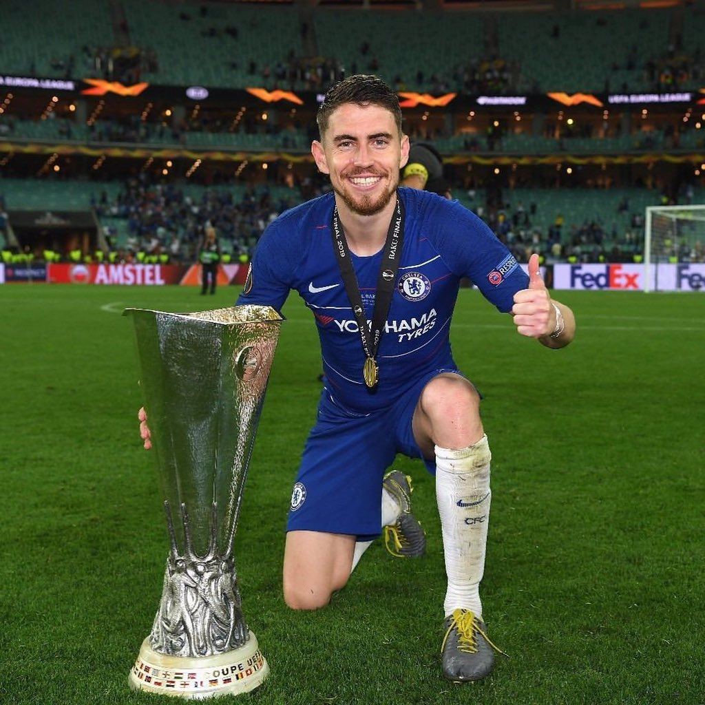
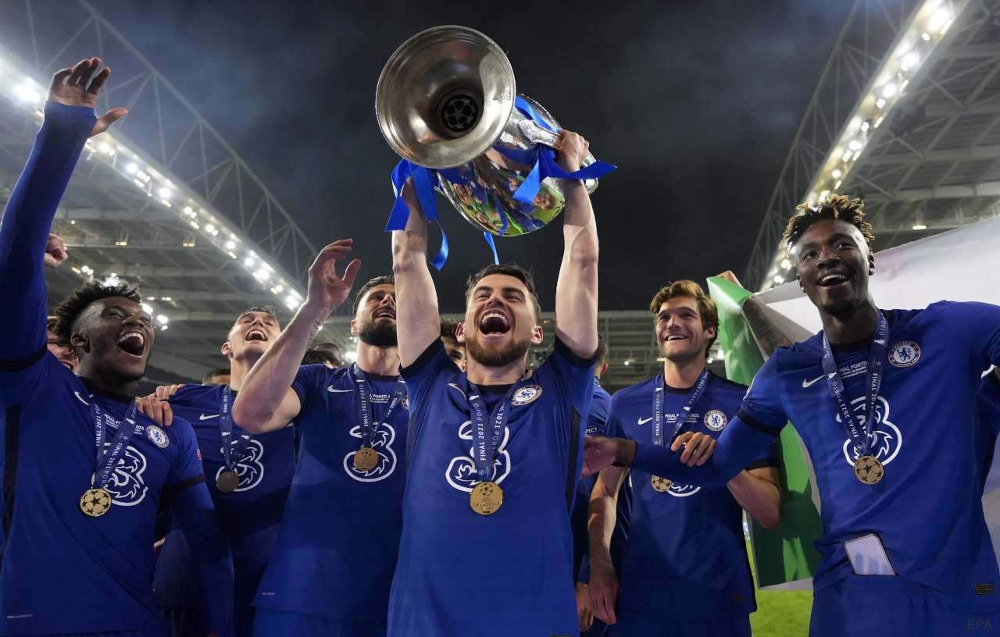

JORGINHO FRELLO
JORGINHO FRELLOแข้งอิตาเลี่ยนรายนี้เป็นกองกลางจอมเทคนิคที่สามารถอ่านจังหวะการเล่นได้ดี จ่ายบอลและเคลื่อนที่ได้อย่างรวดเร็ว มักจะลงเล่นเป็นกองกลางตำแหน่งเพลย์เมคเกอร์ คอยประสานเกมรับและเกมรุกให้กับทีม
เขาลงเล่นให้ทีมเชลซีของเมาริซิโอ ซาร์รี่ไปรวม 54 ครั้ง ลงเป็นตัวจริงแทบทั้งหมด เว้นเพียงนัดเดียวในลีก
จอร์จินโญ่ลงทำประตูแรกในพรีเมียร์ ลีกได้ด้วยการยิงจุดโทษในเกมชนะฮัดเดอร์สฟิลด์ 3-0 ส่วนประตูแรกจากโอเพ่นเพลย์มาจากเกมที่ไปเยือนฟูแล่มในเดือนมีนาคม
เขาแก้ตัวจากการพลาดจุดโทษในคาราบาว คัพรอบชิงชนะเลิศ (หลังจากยิงเข้าในการดวลจุดโทษตัดสินเกมพบสเปอร์สในรอบรองชนะเลิศ) มาสังหารจากระยะ 12 หลาในเกมพบไอน์ทรัตน์ แฟรงค์เฟิร์ต ช่วยให้ทีมผ่านเข้าไปแข่งในบากูได้สำเร็จ และทำผลงานได้ดีจนช่วยให้ทีมโค่นอาร์เซนอลและคว้าแชมป์มาได้สำเร็จ
ในช่วงต้นเดือนตุลาคม 2020 จอร์จินโญ่ ยิง 2 จุดโทษในระยะเวลาห่างกัน 4 นาทีที่พบกับคริสตัล พาเลซ และสิ่งดังกล่าวทำให้เขากลายเป็นนักเตะเชลซีคนแรก ที่ยิงจุดโทษ 2 ลูกใน 2 เกมการแข่งขันของพวกเรา หลังเคยทำได้ในแมตช์เหย้าที่พบกับอาแย็กซ์ในแชมเปี้ยนส์ ลีกฤดูกาลก่อน
ในเดือนเดียวกันนี้ เดอะ บลูส์ คว้าชัยชนะเหนือคราสโนดาร์ในรอบแบ่งกลุ่มแชมเปี้ยนส์ ลีกด้วยสกอร์ 4-0 แต่ผลต่างน่าจะมากกว่านี้ หากจอร์จินโญ่ไม่ซัดจุดโทษไปชนเสา
เขาส่งท้ายซีซั่นด้วยการเป็นนักเตะที่ลงตัวจริงมากที่สุดอันดับ 6 นับรวมทุกรายการ ซึ่งหนึ่งในนั้นคือศึกแชมเปี้ยนส์ ลีก รอบชิงชนะเลิศที่ปอร์โต้ รวมทั้งเกมกับสโมสรจากเมืองดังกล่าวในรอบก่อนรองชนะเลิศ ที่เขาได้รับรางวัลแมน ออฟ เดอะ แมตช์จากยูฟ่า หลังแอสซิสต์ให้กับเมาท์ยิงประตูเบิกร่องจนทีมคว้าชัยชนะ 2-0 รอบดังกล่าวเราผ่านมาได้ด้วยสกอร์รวม 2-1
สำหรับจอร์จินโญ่ แม้เขาจะมีส่วนร่วมมากมายในสนามทั้งการผ่านบอลที่ไหลลื่น และการเคลื่อนไหว แต่ภาพที่ทุกคนจำติดตาได้มากที่สุดสำหรับซีซั่น 2020/21 คือตอนที่เขาอยู่บนอัฒจันทร์ ในตอนนั้นเจ้าตัวติดโทษแบนจากนัดก่อนที่เจอกับแอตเลติโก้ มาดริดในแชมเปี้ยนส์ ลีก แต่เขาแสดงให้เห็นถึงความกลมเกลียวของขุมกำลังที่ก้าวไปคว้าแชมป์ได้สำเร็จ ด้วยจังหวะฉลองประตูช่วงท้ายเกมที่เอแมร์ซอนทำได้
จอร์จินโญ่ ถูกเลือกติดขุมกำลังอัซซูรี่ในการแข่งขันยูโร 2020 โดยเขากลายเป็นนักเตะที่ขาดไม่ได้สำหรับโรแบร์โต้ มันชินี่ ตลอดเส้นทางที่ไปถึงตำแหน่งแชมป์ กองกลางจากเชลซี เป็นนักเตะเอาต์ฟิลด์เพียง 1 ใน 2 คน ที่ได้ลงตัวจริงทุกนัด และช่วยพวกเขาผ่านไปถึงรอบชิงชนะเลิศ ด้วยบทบาทสำคัญในความสำเร็จจากตำแหน่งคุ้นเคยด้วยการเล่นเป็นหัวใจในแดนกลาง
เขายิงลูกจุดโทษตัดสินชัยชนะในรอบรองฯ ที่ดวลเป้ากับสเปน ซึ่งแม้ว่าการยิงจุดโทษของเขาในเกมที่อิตาลีเอาชนะอังกฤษในรอบชิงฯ จะถูกเซฟ แต่ความสำคัญของมิดฟิลด์รายนี้ต่อความสำเร็จของอัซซูรี่ถือว่าไม่มีใครตั้งข้อสงสัย ซึ่งเขาถูกเลือกติดทีมยอดเยี่ยมประจำทัวร์นาเม้นต์ยูโร 2020 โดยยูฟ่าด้วย
SOCIAL MEDIA
 |
|